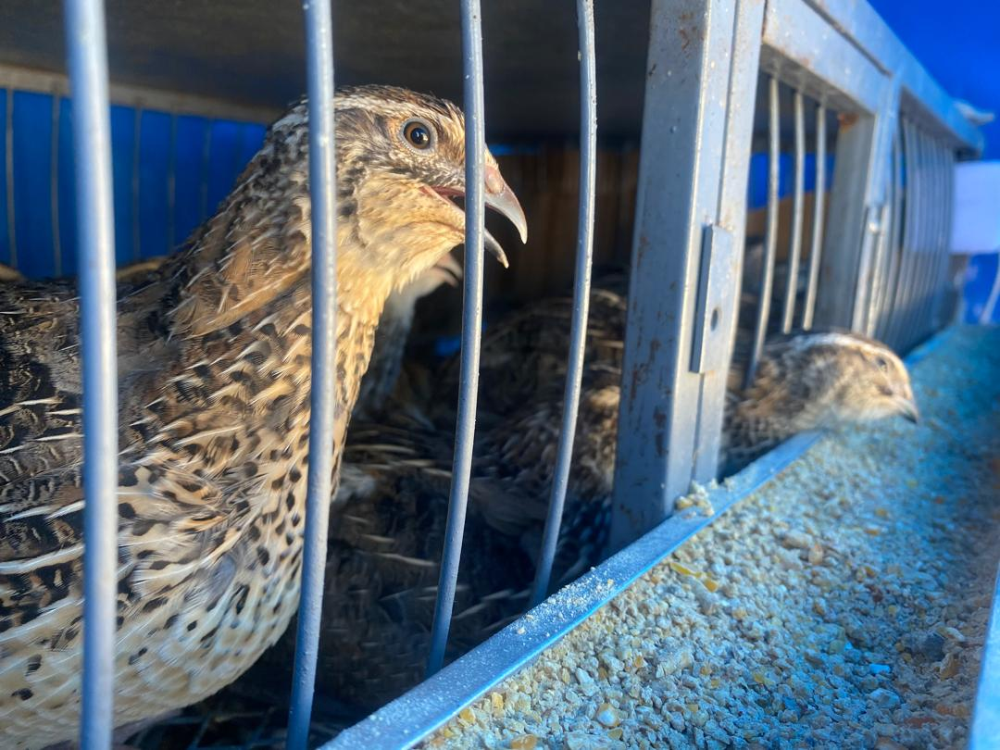
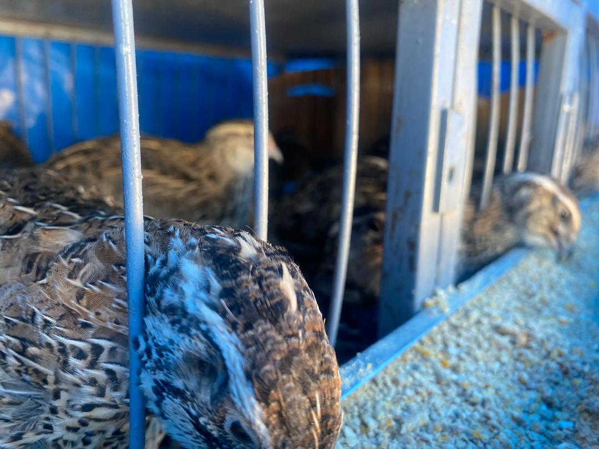
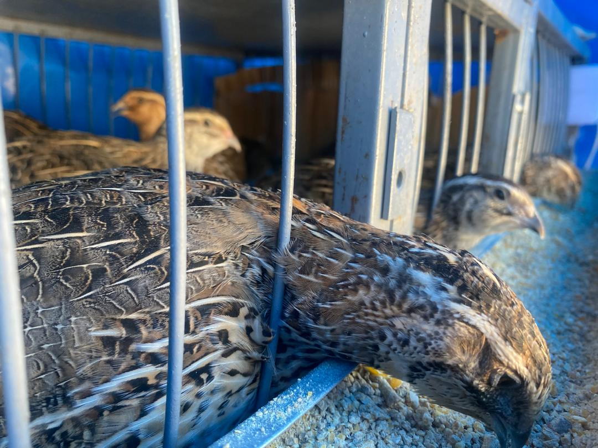
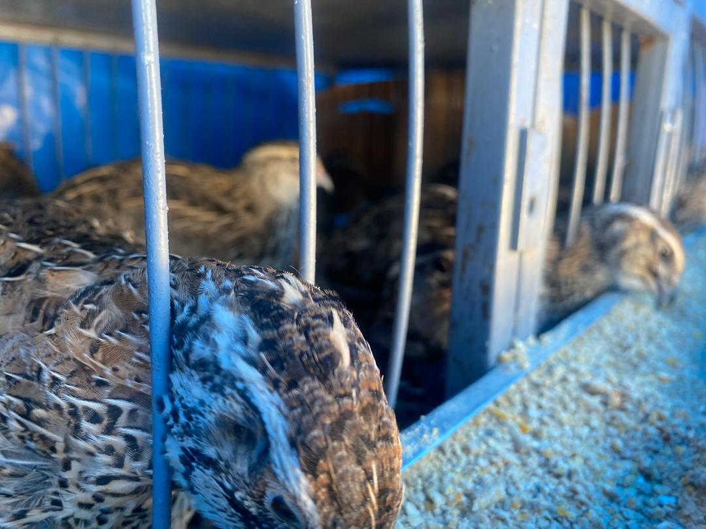
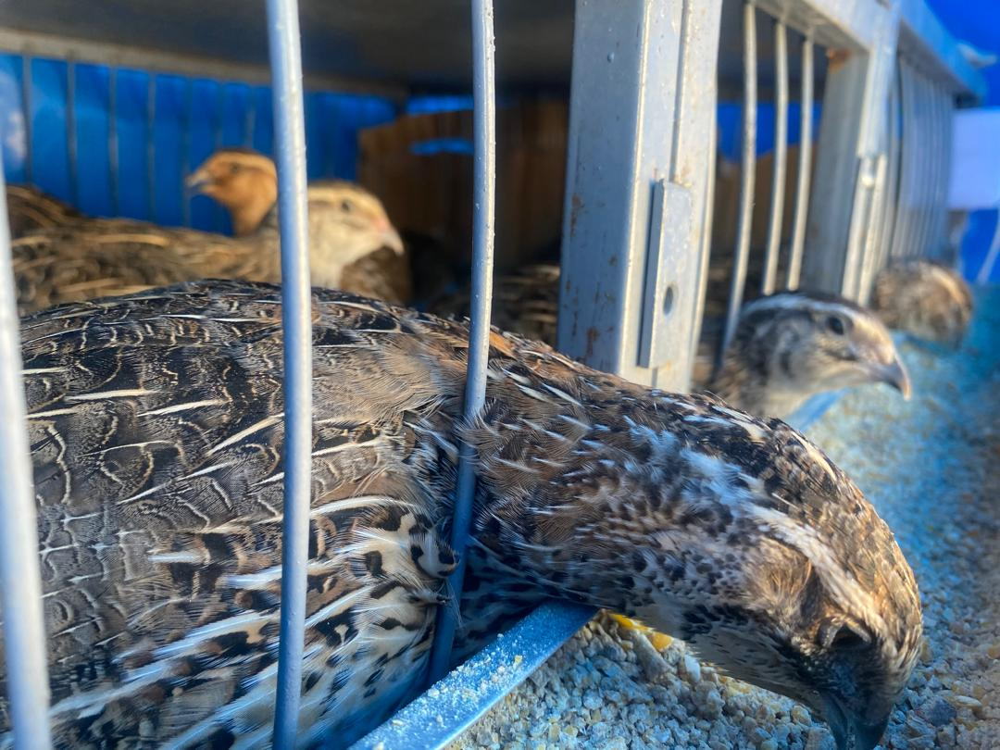
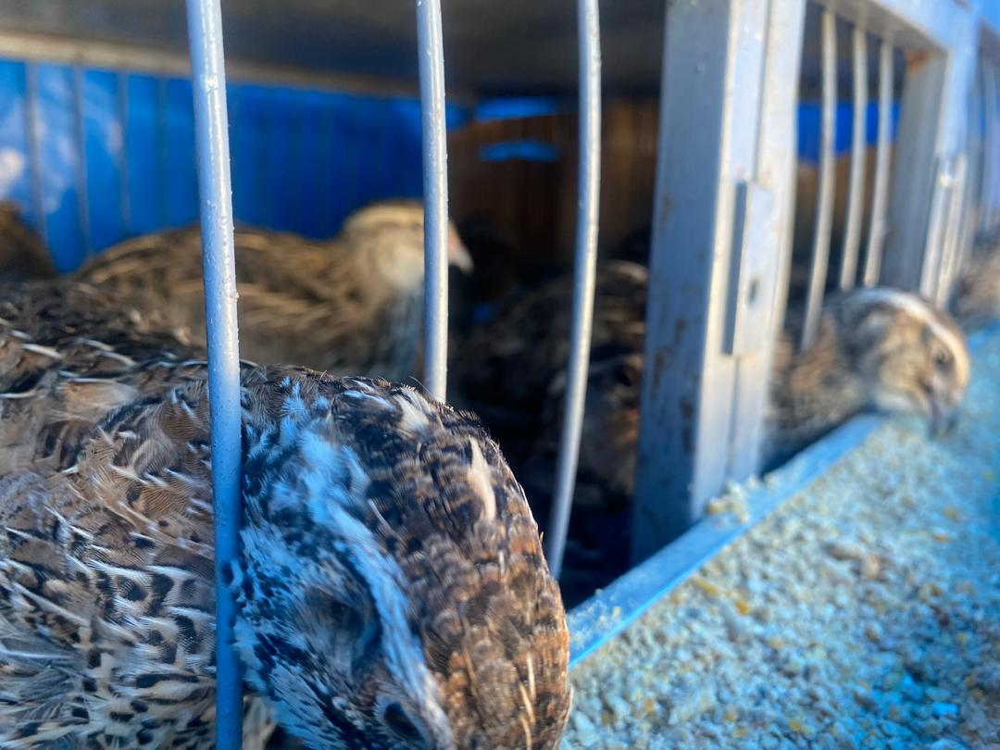
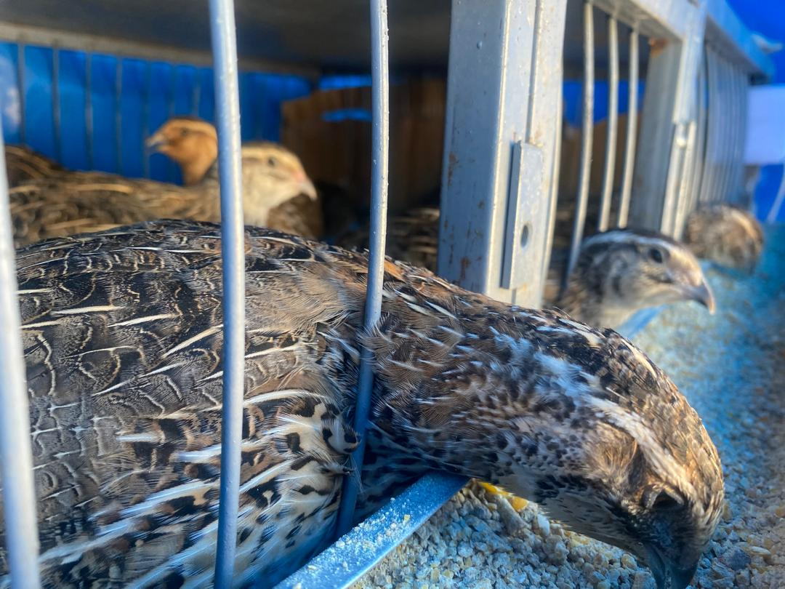
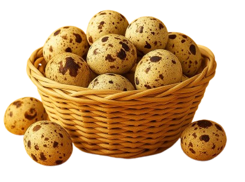
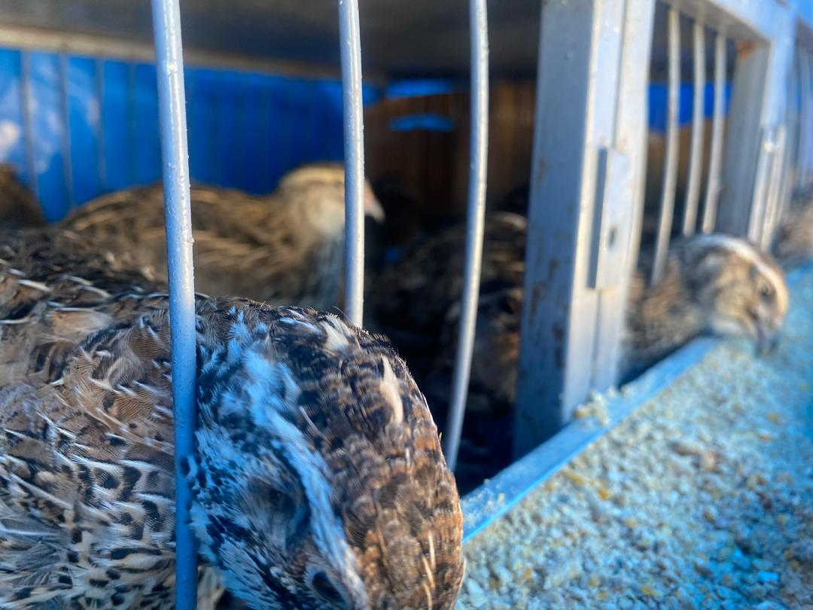
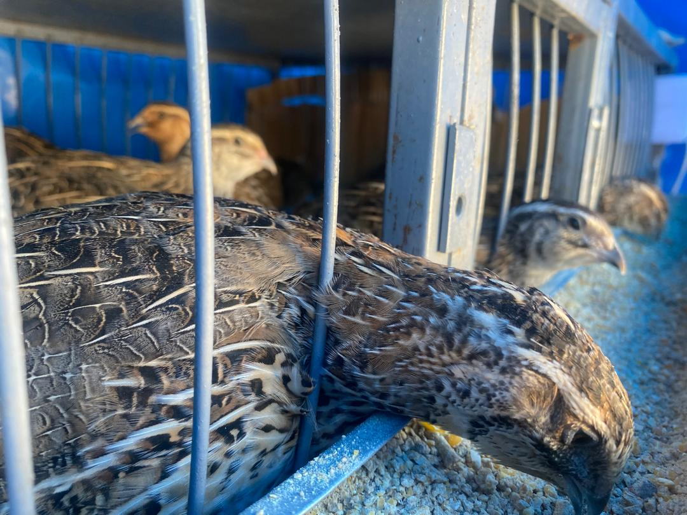

Notre ferme
Quelques photos de notre ferme à Dakar.

 





Œufs et Chair Bio
Boostez votre santé naturellement avec nos œufs de caille frais.
Commandez Maintenant ! 
Notre ferme à Dakar propose des œufs de caille bio et de la chair de caille, élevés localement. Acheter vos œufs de caille à Dakar, c’est choisir la qualité, la fraîcheur et le soutien à l’élevage local.
Prix œufs de caille Sénégal : livraison rapide sur Dakar et environs.
Protéines pour sportifs, enfants et fatigués.
Vitamines A, B, C, D + zinc et fer.
Vitamine B12 pour un cerveau au top.
Aphrodisiaques naturels.
À consommer crus (1-5/jour) ou bouillis (max 5 min).
Faites bouillir 12 œufs, ajoutez à une salade verte.
Marinez avec huile d'olive, thym, grillez 10-15 min.
Mélangez œufs crus avec miel, consommez à jeun.
Battez œufs avec légumes, cuisez en omelette.
Intégrez œufs dans vos pâtisseries.
Quelques photos de notre ferme à Dakar.


Localisation : Sacré Coeur 3 VDN, Dakar
Téléphone : +221 77 146 3012
WhatsApp : +221 76 264 1751